About Hearty
A habit tracker built around a heart that shows how you are doing.
Hearty turns small daily habits into something you can see. At the center is a heart character. When you look after yourself, it perks up; when you let things slide, it droops. It is a friendlier nudge than a streak counter or a checklist.
Your heart has moods
The character changes with how your habits are going. Each condition comes from your heart health score and, for the top two, how many days in a row you have kept it up.
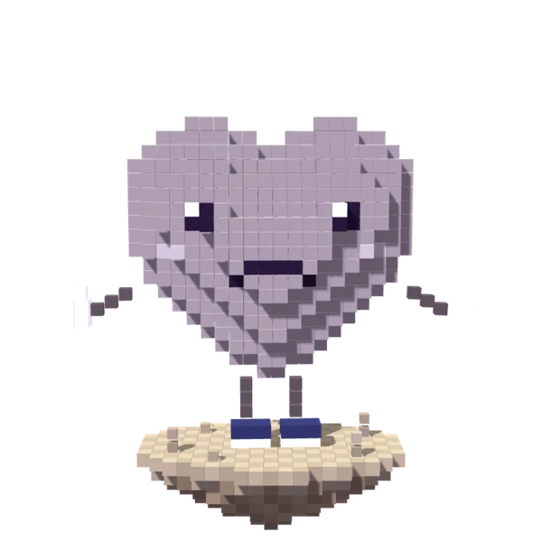
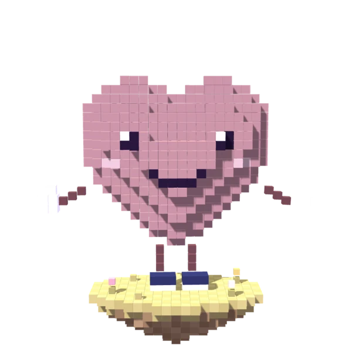
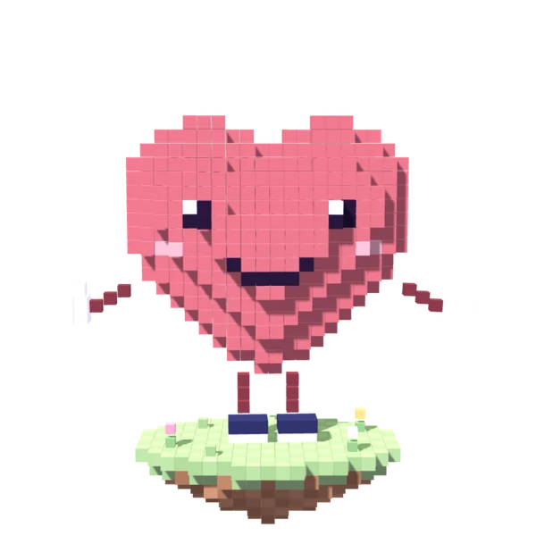
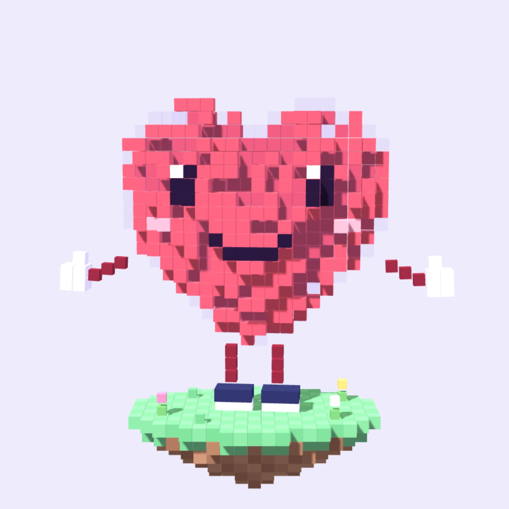
See it
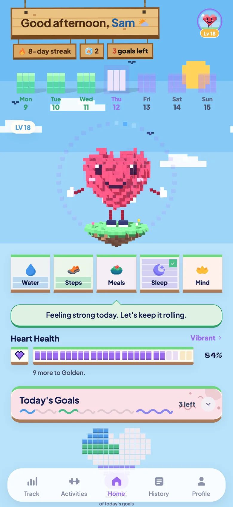
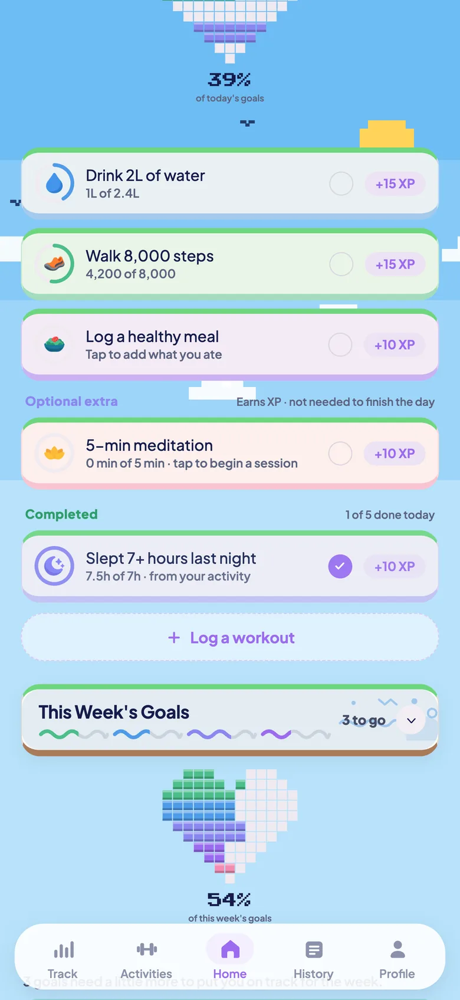
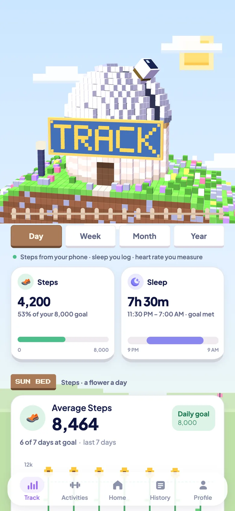
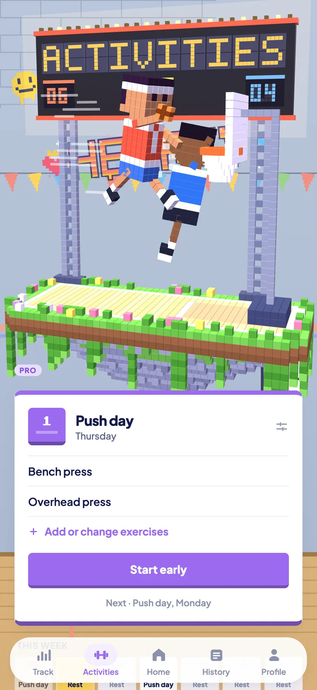
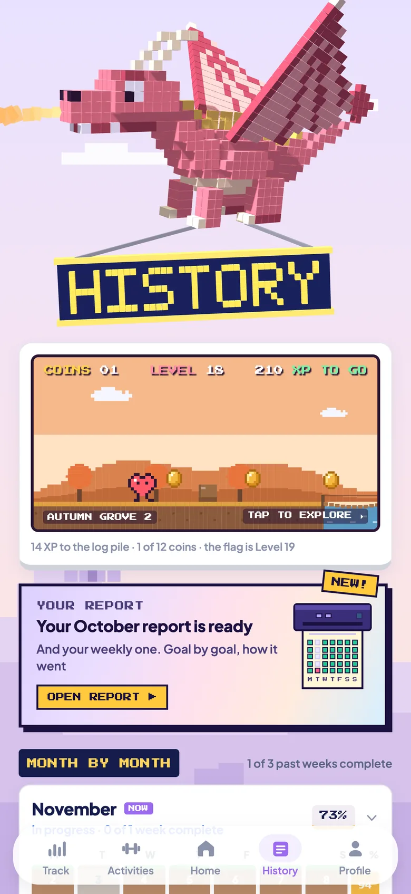
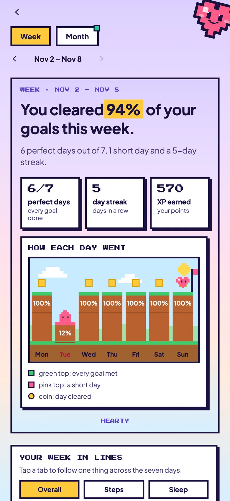
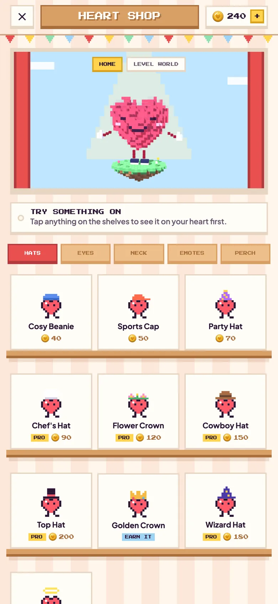
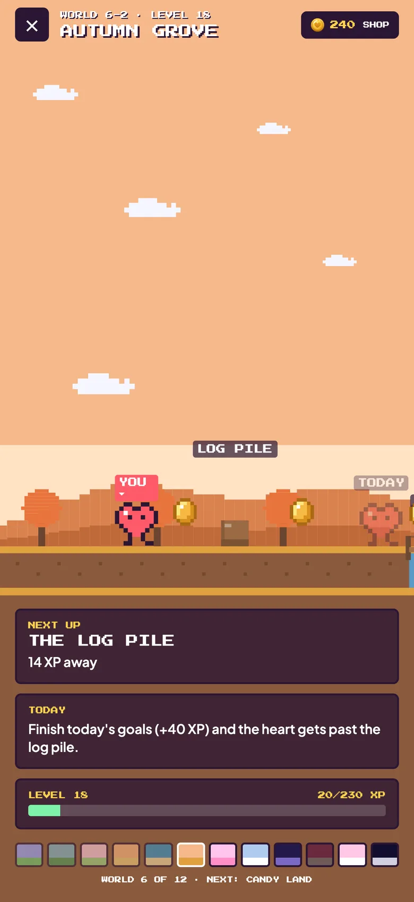
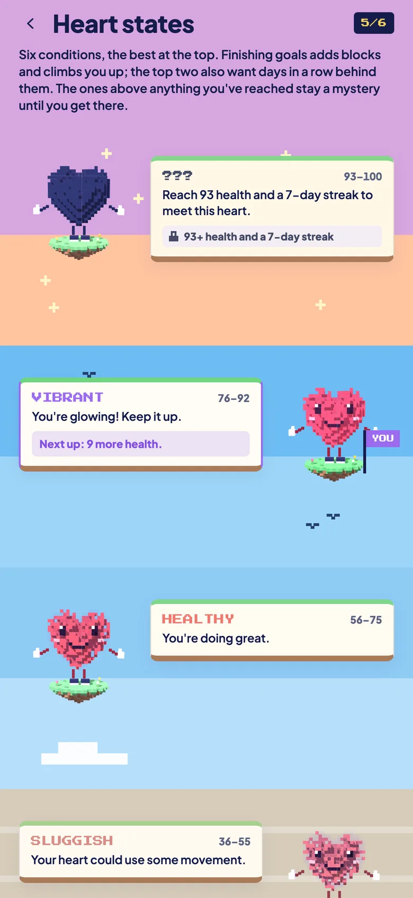
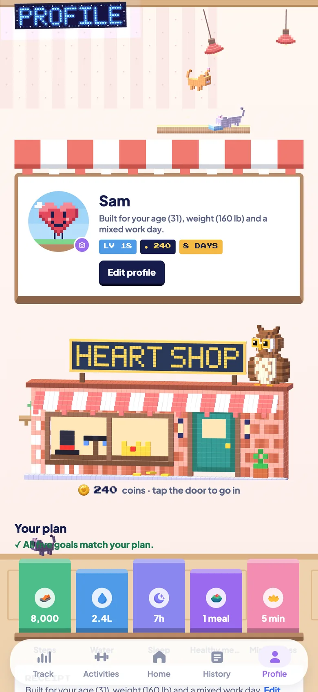
These screens show a sample profile with made-up data, so they illustrate the app rather than anyone’s real week.
Five small daily goals
- Steps, counted by your iPhone.
- Water, logged in a tap.
- Sleep, from your own log, an estimate from your phone, or Apple Health with Pro.
- Healthy meals, logged as you eat them.
- Mindfulness, an optional bonus that never counts against you.
Your daily targets start from your age, weight and how active your day is, and you can change any of them. Past days keep the goals they were lived under, so changing a goal never rewrites your history.
A heart that reflects your habits
Finishing goals earns XP and raises your heart's health. The heart moves through six conditions, from withered to golden, and the top ones also need a run of consecutive days, so they have to be earned. Take a few days away and it slips gently, never all the way to zero.
More than the basics
- A home screen widget that shows your heart and today's progress.
- Reminders you can turn off, for goals left, a streak at risk, and bedtime.
With Hearty Pro
Everything is open for your first 7 days, with no payment details asked for. After that, the heart, the five goals, your streak, levels, the widget and this week's history stay free, and these need Hearty Pro, monthly or yearly:
- Workouts and lifting. Log any activity, run a timer, plan a weekly split, and track the weight you lift.
- Food and calories. A calorie tracker with a built-in food list and a daily aim that fits your goal.
- Your full history and reports. Every past week, Track by month and year, and weekly and monthly reports with trends, your strongest and weakest weekdays, and a few things to try next.
- Apple Health. Connect it to see heart rate, resting heart rate, heart rate variability and measured sleep from your watch. Hearty only reads. It never writes to Health.
- Streak freezes. Two a month. Miss a day and a freeze keeps your streak going, so one off day doesn't undo weeks of it.
Nothing you log is deleted if Pro ends.
Private by default
Everything Hearty stores stays on your phone. You do not need an account to use it, and there is no advertising or tracking. The only figures Hearty collects are anonymous counts of which screens people reach, which you can switch off. An optional backup, which you start yourself and which does use an email sign-in, can carry your history to a new phone. Read the full Privacy Policy for exactly what is and isn't kept.
A note on health
Hearty is for general wellbeing and motivation. It is not a medical device and does not give medical advice. See the Terms of Service.
Questions
Visit Support, or email hearty.app.official@gmail.com.